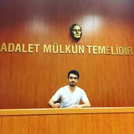

Arcane Big Hype!
Arcane'in etkisi dünyayı sarstı, ve zamanında zirvede olan ADC'ler de bu hype'ı yakalayarak her zaman kazanan oldu!

Arcane ve ADC'ler
Arcane'in gücü ile birçok ADC, efsanevi hale geldi. Arcane ile birlikte ADC oyuncuları, şampiyonlarının arkasında büyük bir topluluk ve etkileşim yakaladılar.
En İyi ADC'ler
ADC dünyasında zaman zaman en iyi oyuncuların kimler olduğu tartışılır. Ancak bu oyuncular, istikrarlı performansları ile zirvede kalmışlardır.
Ünlü ADC Oyuncuları
- Zeitnot
- Zeitnot
- Zeitnot
- Zeitnot
- Zeitnot
ADC Oyunları Nasıl Oynanır?
Bir ADC, takımı için taşıyıcı rolünü üstlenir. Bu, özellikle late game'de çok önemlidir. ADC oynarken dikkat edilmesi gerekenler:
- Konumlanma: ADC'nin pozisyonu, takım savaşlarında hayatta kalmasını ve yüksek hasar çıkarmasını sağlar.
- Minyon Dalgası Yönetimi: Minyonları doğru bir şekilde kesmek, alt koridorda ön plana çıkmanın anahtarıdır.
- Şampiyon Seçimi: ADC şampiyonları, item yapıları ve pozisyon alma kabiliyetleri ile farklılık gösterir.
Yorumlar ve Topluluk
Arcane ve ADC oyuncuları arasında geniş bir topluluk var. İşte bu topluluğun en popüler yorumları:
Yorum Yapın
Yusuf Yeler: ADC'lerin başarıları bence çok etkileyici. Özellikle Zeitnot'un dönüşü büyük olay oldu!
Aram Topaloğlu: Arcane'deki detaylar gerçekten harika! Şampiyonların arka planlarını görmek çok ilginç.
Uğur Panky Taş: Param bitti zeitnotun karttan rp çektim helal et.
En Son Haberler
Sonunda ADC'ler, şampiyonların en hızlı ve etkili taşıyıcıları olarak geri döndü. Peki, gelecek hakkında ne düşünüyorlar? İşte bazı son gelişmeler:
Zeitnot'un Geri Dönüşü
Zeitnot, yıllar sonra tekrar sahneye çıkıyor. Bu geri dönüş, ADC oyuncuları için ne anlama geliyor?
Arcane 3. Sezon Geliyor!
Arcane'in üçüncü sezonu hakkında ilk bilgiler geldi! Bu sezonun ADC oyuncuları için nasıl bir dönüm noktası olacağını tartışıyoruz.
2024 LCS Ödülleri
2024 LCS ödüllerinde yılın en iyi ADC oyuncusu kim olacak? Tahminlerimizi yapıyoruz!